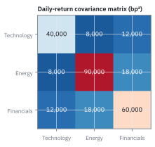

8.1 The Mean Vector and the Covariance Matrix
mean vector บอกว่าผลตอบแทนหลายตัวมีศูนย์กลางอยู่ตรงไหน ส่วน covariance matrix บอกว่าแต่ละตัวแกว่งแรงแค่ไหนและแกว่งไปด้วยกันอย่างไร
สองทีมส่ง covariance matrix ของหุ้นสามกลุ่มมาให้ ตัวเลขชุดเดียวกันทุกช่อง แต่ทีมหนึ่งเรียงแถวเป็น Technology–Energy–Financials อีกทีมเรียง Energy–Technology–Financials ทั้งสองตารางสมมาตรและผ่านการตรวจว่า eigenvalue เป็นบวกทุกตัว ถ้าใส่น้ำหนักพอร์ต $(0.5,\ 0.3,\ 0.2)$ ชุดเดียวกันลงไปทั้งสองตาราง ความเสี่ยงรายวันของพอร์ต \$10 ล้านจะออกมาเท่ากันไหม
ลองตอบก่อนเปิดเฉลย
ไม่เท่า ตารางที่เรียงตรงกับน้ำหนักให้ SD รายวัน 1.6571% หรือประมาณ \$165,711 ส่วนตารางที่เรียงสลับให้ 1.8958% หรือประมาณ \$189,578 สูงเกินจริง 14% ทั้งที่โปรแกรมคูณ matrix ผ่านโดยไม่มี error เลย เหตุคือน้ำหนักตัวแรก 0.5 ไปจับ Energy ที่แกว่งแรงกว่าแทน Technology ตัวเลขในตารางไม่มีชื่อติดมาด้วย ลำดับแถว ลำดับคอลัมน์ และลำดับน้ำหนักจึงต้องตรงกันทั้งสามที่ ท้ายหน้านี้คำนวณให้ดูทีละช่อง
ภาพรวมก่อนลงสูตร
ผลตอบแทนพรุ่งนี้ของหุ้นหลายตัวยังไม่รู้ล่วงหน้า เราจึงมองมันเป็น random vector ตัวเดียวที่มีหลายช่อง ถ้าจำลองหลายวันแล้ววาดแต่ละวันเป็นจุดหนึ่งจุด จะได้เมฆจุดก้อนหนึ่ง สิ่งที่อยากรู้มีสามเรื่อง: เมฆอยู่ตรงไหน แต่ละแกนกว้างแค่ไหน และเมฆเอียงหรือไม่
mean vector ตอบเรื่องแรก มันคือค่าเฉลี่ยทีละช่อง covariance matrix ตอบอีกสองเรื่องในตารางเดียว ช่องบนแนวทแยงคือ variance ของแต่ละตัว ช่องนอกแนวทแยงคือ covariance ของแต่ละคู่ ซึ่งเป็นค่าเฉลี่ยของ “การเบี่ยงจากค่าเฉลี่ยของตัวหนึ่ง คูณ การเบี่ยงของอีกตัว” ถ้าสองตัวมักเบี่ยงไปทางเดียวกัน ผลคูณส่วนใหญ่เป็นบวก และเมฆเอียงขึ้นขวา
หน้านี้จะสร้างทั้งสองอย่างจากนิยาม คำนวณจากข้อมูลสามวันด้วยมือ ดูว่าทำไมตัวหารเป็น $T-1$ ทำไมตารางต้องสมมาตรและห้ามให้ variance ของพอร์ตใดติดลบ แล้วแปลงเป็น correlation เพื่ออ่านตารางของสินทรัพย์ 8 กลุ่ม ก่อนกลับมาตอบคำถามเปิด
รูป — เมฆผลตอบแทนสองตัว ศูนย์กลาง ความกว้าง และความเอียง
ศัพท์ที่ใช้ในหัวข้อนี้
- Random vector
- vector ที่แต่ละช่องเป็นตัวแปรสุ่ม เช่นผลตอบแทนพรุ่งนี้ของหุ้นสามกลุ่ม ใช้เก็บสิ่งที่ยังไม่รู้หลายตัวไว้ด้วยกันโดยไม่ทิ้งความสัมพันธ์ระหว่างกัน
- Mean vector $\mu$
- ค่าเฉลี่ยของแต่ละช่อง เรียงตามลำดับเดียวกับ random vector ใช้เป็นศูนย์กลางของเมฆจุด และใช้หา expected return ของพอร์ตด้วย $w^{\mathsf T}\mu$
- Covariance matrix $\Sigma$
- ตาราง $n\times n$ ที่ช่อง $(i,j)$ คือ covariance ของตัวที่ $i$ กับตัวที่ $j$ แนวทแยงเป็น variance ใช้คำนวณความเสี่ยงของพอร์ตทุกแบบจากตารางเดียว
- Correlation matrix $C$
- covariance ที่หารด้วย SD ของทั้งสองตัว จึงไม่มีหน่วยและแนวทแยงเป็น 1 ใช้เทียบความแน่นของความสัมพันธ์ระหว่างสินทรัพย์ที่แกว่งแรงไม่เท่ากัน
- Positive semidefinite (PSD)
- matrix ที่ทำให้ $w^{\mathsf T}\Sigma w\ge0$ กับน้ำหนัก $w$ ทุกชุด covariance จริงทุกตารางต้องผ่านเงื่อนไขนี้ เพราะ $w^{\mathsf T}\Sigma w$ คือ variance ของพอร์ต
- Sample estimate $\hat\mu,\ \hat\Sigma$
- ค่าที่คำนวณจากข้อมูล $T$ วัน ใส่หมวกไว้เพื่อแยกจากค่าจริงของแบบจำลองที่เราไม่เคยรู้
- Basis point (bp)
- $1\text{ bp}=0.01\%=0.0001$ ใช้เขียนผลตอบแทนเล็ก ๆ ให้อ่านง่าย เวลาแปลงหน่วยของ covariance ต้องคูณด้วยตัวแปลงยกกำลังสอง
สัญลักษณ์และหน่วย
| สัญลักษณ์ | ความหมาย | หน่วย |
|---|---|---|
| $R=(R_1,\ldots,R_n)^{\mathsf T}$ | ผลตอบแทนของ $n$ สินทรัพย์ในช่วงเวลาเดียวกัน; $r_t$ คือค่าที่เห็นจริงในวัน $t$ | ทศนิยม หรือ bp |
| $\mu,\ \Sigma$ | mean vector และ covariance matrix ของแบบจำลอง | ผลตอบแทน; ผลตอบแทน² |
| $\hat\mu,\ \hat\Sigma$ | ค่าประมาณจากข้อมูล $T$ แถว | เหมือนค่าจริง |
| $Z=R-\mu$ | การเบี่ยงจากค่าเฉลี่ย | ผลตอบแทน |
| $w$ | น้ำหนักพอร์ต คงที่ตลอดช่วงที่ศึกษา | ไม่มีหน่วย |
| $D,\ C$ | diagonal matrix ของ SD; correlation matrix | ผลตอบแทน; ไม่มีหน่วย |
ขั้นที่ 1 — เรียงผลตอบแทนเป็น vector แล้วเฉลี่ยทีละช่อง
ก่อนคำนวณอะไร ต้องตกลงให้ชัดว่าช่องที่หนึ่ง สอง สาม คืออะไร ใช้หน่วยอะไร และวัดช่วงเวลาไหน ทั้งหน้านี้ให้ $R$ เป็นผลตอบแทนหนึ่งวันแบบ simple return ของหุ้นสามกลุ่ม เรียง Technology, Energy, Financials ตัวเลขเป็นแบบจำลองสมมติ
ค่าเฉลี่ยของ vector ไม่มีอะไรใหม่ คือค่าเฉลี่ยของแต่ละช่องแยกกัน ที่ต้องเก็บเป็น vector ก็เพื่อคูณกับน้ำหนักพอร์ตได้ทีเดียว: expected return ของพอร์ตคือ $w^{\mathsf T}\mu$ เพราะค่าเฉลี่ยของผลรวมเท่ากับผลรวมของค่าเฉลี่ย (expected value เป็น linear) แต่สามตัวเลขนี้ยังไม่บอกเลยว่าแต่ละกลุ่มแกว่งแรงแค่ไหน หรือแกว่งไปด้วยกันหรือไม่
ขั้นที่ 2 — covariance คือค่าเฉลี่ยของผลคูณการเบี่ยง
เราหักค่าเฉลี่ยออกก่อนให้เหลือแต่การเบี่ยง แล้วเก็บผลคูณของการเบี่ยงทุกคู่ไว้ในตารางเดียวด้วย outer product (คอลัมน์คูณแถว) นี่คือนิยามของ covariance matrix
$ZZ^{\mathsf T}$ เป็นคอลัมน์ $3\times1$ คูณแถว $1\times3$ จึงได้ตาราง $3\times3$ ที่ช่อง $(i,j)$ คือ $Z_iZ_j$ ถ้าเผลอเขียน $Z^{\mathsf T}Z$ จะได้ตัวเลขตัวเดียวคือผลรวมกำลังสอง บรรทัดที่สี่ได้จากการกระจายวงเล็บเป็น $\mathbb E[R_iR_j]-\mu_i\mathbb E[R_j]-\mu_j\mathbb E[R_i]+\mu_i\mu_j$ แล้วสามพจน์หลังรวมกันเหลือ $-\mu_i\mu_j$ บนแนวทแยง $i=j$ ผลคูณคือการเบี่ยงยกกำลังสอง จึงเป็น variance นิยามนี้ต้องการแค่ว่าค่าเฉลี่ยของผลตอบแทนยกกำลังสองมีค่าจำกัด ไม่ต้องสมมติว่าเป็น Normal
แบบจำลองสามกลุ่มในคำถามเปิดกำหนดตารางนี้ไว้ ในหน่วยทศนิยมยกกำลังสองของผลตอบแทนรายวัน
อ่านแนวทแยงก่อน: variance $0.0004$ ไม่ใช่ SD 0.04% ต้องถอดรากเป็น 2% ช่องนอกแนวทแยงเป็นบวกทุกช่อง แปลว่าทุกคู่มีแนวโน้มเบี่ยงไปทางเดียวกัน และช่อง $(1,2)$ เท่ากับช่อง $(2,1)$ เพราะ $Z_1Z_2=Z_2Z_1$
รูป — covariance ของสามกลุ่มในหน่วย bp²

ขั้นที่ 3 — คำนวณจากข้อมูลสามวันด้วยมือ
ในงานจริงเราไม่เคยรู้ $\mu$ กับ $\Sigma$ ต้องประมาณจากข้อมูลในอดีต ลองกับข้อมูลชุดเล็กที่สุดที่ยังเห็นกลไก: ผลตอบแทนสมมติสามวันของ Technology และ Energy ในหน่วย bp วันเดียวกันอยู่แถวเดียวกัน
| วัน | Technology | Energy | การเบี่ยงจากค่าเฉลี่ย | ผลคูณการเบี่ยง |
|---|---|---|---|---|
| 1 | 4 | 1 | $(-1,\ -1)$ | +1 |
| 2 | 6 | 4 | $(+1,\ +2)$ | +2 |
| 3 | 5 | 1 | $(0,\ -1)$ | 0 |
ช่อง $\hat\Sigma_{12}$ ก็คือผลรวมของคอลัมน์ผลคูณในตาราง หารด้วย $T-1=2$ ไม่มีวันไหนเลยที่สองกลุ่มเบี่ยงสวนทางกัน covariance จึงเป็นบวก ค่าเฉลี่ยหารด้วย 3 แต่ covariance หารด้วย 2 เหตุผลอยู่ในขั้นถัดไป ระวังอย่าเอาตาราง bp² นี้ไปปะกับแบบจำลองสามกลุ่มหน่วยทศนิยมด้านบน แม้ชื่อสินทรัพย์จะตรงกัน มันเป็นคนละชุดข้อมูลและคนละหน่วย
รูป — ผลคูณการเบี่ยงคือพื้นที่สี่เหลี่ยมจากค่าเฉลี่ยถึงแต่ละวัน
ขั้นที่ 4 — ทำไมตัวหารเป็น $T-1$ ไม่ใช่ $T$
คำถามที่ทุกคนถาม: เฉลี่ยก็ต้องหารด้วยจำนวนข้อมูล ทำไมเหลือ 2 คำตอบอยู่ที่ว่าเราวัดระยะรอบ $\hat\mu$ ซึ่งคำนวณจากข้อมูลชุดเดียวกัน ไม่ได้วัดรอบ $\mu$ จริงที่เราไม่รู้ ดูมิติเดียวก่อน ให้ $\bar x$ เป็นค่าเฉลี่ยตัวอย่าง และ $c$ เป็นจุดศูนย์กลางใดก็ได้
บรรทัดที่สองได้จากการเขียน $x_t-c=(x_t-\bar x)+(\bar x-c)$ แล้วยกกำลังสอง พจน์ไขว้ $2(\bar x-c)\sum_t(x_t-\bar x)$ หายไป เพราะผลรวมการเบี่ยงรอบค่าเฉลี่ยตัวอย่างเป็นศูนย์เสมอ ผลคือ $\bar x$ เป็นจุดที่ทำให้ผลรวมกำลังสองต่ำที่สุด จึงต่ำกว่าผลรวมรอบค่าเฉลี่ยจริง ถ้าหารด้วย $T$ ค่าที่ได้จะเล็กไปโดยเฉลี่ย
เล็กไปเท่าไร ถ้าแต่ละวันอิสระกันและมี variance $\sigma^2$ เท่ากัน (IID) ค่าเฉลี่ยตัวอย่างจะมี variance $\sigma^2/T$ (standard error ของค่าเฉลี่ย) ใส่ค่าคาดหมายทั้งสองข้างของสมการข้างบนโดยเลือก $c=\mu$
ช่องว่างกินไปหนึ่งเท่าของ $\sigma^2$ พอดี หรือพูดว่าเสีย degree of freedom ไปหนึ่งตัวเพราะใช้ข้อมูลไปประมาณค่าเฉลี่ยแล้ว หารด้วย $T-1$ จึงได้ค่าที่ถูกโดยเฉลี่ย (unbiased) แบบ matrix ใช้เหตุผลเดียวกันทีละช่อง จึงได้ $\mathbb E[\hat\Sigma]=\Sigma$
รูป — ผลรวมกำลังสองต่ำสุดที่ค่าเฉลี่ยตัวอย่าง
สิ่งที่ $T-1$ ไม่ได้แก้
unbiased แปลว่าถูกโดยเฉลี่ยเมื่อทำซ้ำหลายครั้ง ไม่ได้แปลว่าข้อมูลสามวันให้ค่าใกล้ความจริง และผลนี้อาศัย IID ถ้าความผันผวนเปลี่ยนตามช่วงเวลา หรือผลตอบแทนสัมพันธ์ข้ามวัน ต้องคิดใหม่ ส่วนถ้าตั้งใจหา covariance ของข้อมูลชุดนี้เองโดยให้ทุกแถวมีโอกาส $1/T$ ก็หารด้วย $T$ ได้ เป็นคนละคำถาม ไม่ใช่สูตรผิด เมื่อ $T$ เป็นหลักร้อย สองค่านี้ต่างกันไม่ถึง 1%
ขั้นที่ 5 — ตารางต้องสมมาตร และห้ามให้ variance ของพอร์ตใดติดลบ
ไม่ใช่ทุกตารางสมมาตรที่เป็น covariance ได้ เงื่อนไขที่ขาดไม่ได้ออกมาจากคำถามง่าย ๆ: ถ้าถือพอร์ตด้วยน้ำหนัก $w$ คงที่ variance ของพอร์ตเป็นเท่าไร
$w^{\mathsf T}Z$ เป็นตัวเลขตัวเดียว คือการเบี่ยงของผลตอบแทนพอร์ต และ $w^{\mathsf T}ZZ^{\mathsf T}w=(w^{\mathsf T}Z)(Z^{\mathsf T}w)=(w^{\mathsf T}Z)^2$ ค่าเฉลี่ยของสิ่งที่ยกกำลังสองแล้วติดลบไม่ได้ ดังนั้น covariance ทุกตารางต้องให้ $w^{\mathsf T}\Sigma w\ge0$ กับทุก $w$ เรียกว่า positive semidefinite ซึ่งเทียบเท่ากับ eigenvalue ทุกตัวไม่ติดลบ (eigenvalues และ positive definiteness)
ลองกับตารางสามวัน: ซื้อ Technology 1 หน่วย แล้วขาย Energy $k$ หน่วยเพื่อ hedge จากนั้นสมมติว่ามีคนแก้ช่อง covariance จาก 1.5 เป็น 2 โดยไม่แตะ variance
ตารางที่แก้แล้วยังสมมาตร แต่บอกว่าพอร์ต hedge บางแบบมี variance ติดลบ ซึ่งเป็นไปไม่ได้ correlation ที่แฝงอยู่เกิน 1 คือสัญญาณเดียวกัน ตารางแบบนี้เกิดขึ้นจริงเมื่อประกอบตารางจากหลายช่วงข้อมูล หรือแต่ละคู่ใช้คนละชุดวันเพราะข้อมูลขาด optimizer ที่เจอตารางนี้จะวิ่งไปหาพอร์ต “ความเสี่ยงติดลบ” ซึ่งไม่มีอยู่จริง
รูป — variance ของพอร์ต hedge เมื่อเปลี่ยนจำนวนที่ขาย
PSD ยอมให้ variance เป็นศูนย์ และข้อมูลน้อยทำให้เกิดเรื่องนี้แน่นอน
PSD ไม่ได้ห้าม variance ศูนย์ในบางทิศ เช่นเมื่อมีสินทรัพย์ซ้ำกันสองตัว ถ้าเขียนข้อมูลที่หักค่าเฉลี่ยแล้วเป็น matrix $X$ ขนาด $T\times n$ จะได้ $\hat\Sigma=X^{\mathsf T}X/(T-1)$ ซึ่งมี rank ไม่เกิน $T-1$ (หักไปหนึ่งเพราะแต่ละคอลัมน์รวมกันได้ศูนย์) ตามเหตุผลของ rank และ invertibility
ผลคือหุ้น 500 ตัวจากข้อมูล 250 วันให้ตาราง 500×500 ที่มี rank ไม่เกิน 249 มีอย่างน้อย 251 ทิศทางที่ตารางอ้างว่า variance เป็นศูนย์ และหา inverse ไม่ได้ แม้โปรแกรมจะเติมตัวเลขครบทุกช่อง optimizer ที่ใช้ตารางนี้จะเจอ “พอร์ตไร้ความเสี่ยง” ปลอม ๆ เต็มไปหมด
ขั้นที่ 6 — หารด้วย SD ให้เป็น correlation แล้วอ่านตาราง 8 สินทรัพย์
covariance ขึ้นกับว่าสินทรัพย์แกว่งแรงแค่ไหน หุ้นที่ผันผวนมากมี covariance ใหญ่กับทุกตัวแม้ความสัมพันธ์จะไม่แน่น จะเทียบความแน่นของความสัมพันธ์ต้องหารช่อง $(i,j)$ ด้วย $\sigma_i\sigma_j$
คูณ $D^{-1}$ ทางซ้ายคือหารแถว $i$ ด้วย $\sigma_i$ คูณทางขวาคือหารคอลัมน์ $j$ ด้วย $\sigma_j$ ผลจึงไม่มีหน่วย แนวทแยงเป็น 1 และทุกช่องอยู่ระหว่าง −1 ถึง 1 เพราะ correlation คือ cos ของมุมระหว่าง vector การเบี่ยงสองตัว (inner product มุม และ correlation) เปลี่ยนหน่วยจาก bp เป็นทศนิยม covariance เปลี่ยน แต่ correlation ไม่เปลี่ยน
ตารางที่ใช้กันจริงมีหลายสินทรัพย์ ต่อไปนี้คือ covariance รายปีของสินทรัพย์ 8 กลุ่มที่ใช้ฝึกสร้างพอร์ต mean-variance ได้แก่ หุ้นกู้สหรัฐ หุ้นกู้ต่างประเทศ หุ้นสหรัฐสี่แบบ หุ้นประเทศพัฒนาแล้วนอกสหรัฐ และหุ้นตลาดเกิดใหม่ ลองแปลงสองคู่ด้วยมือ
covariance ของหุ้นใหญ่สายเติบโต (LG) กับหุ้นเล็กสายเติบโต (SG) เท่ากับ 0.0635 ดูเป็นตัวเลขเล็ก แต่หารด้วย SD แล้วได้ correlation 0.81 แน่นมาก ส่วนหุ้นกู้สหรัฐกับหุ้นใหญ่สาย value (LV) มี covariance ติดลบเล็กน้อย correlation −0.12 นี่คือเหตุผลเชิงตัวเลขที่พอร์ตผสมหุ้นกับหุ้นกู้ ซึ่งหน้าถัดไปจะคำนวณให้เห็น
รูป — correlation ของสินทรัพย์ 8 กลุ่ม และค่าที่ต้องประมาณจริง
นับค่าที่ต้องประมาณ
แนวทแยงมี $n$ ค่า ครึ่งบนมี $n(n-1)/2$ ค่า รวม $n(n+1)/2$ ตาราง 8 สินทรัพย์จึงมี $8\cdot9/2=36$ ค่าที่เป็นอิสระ ไม่ใช่ 64 หุ้น 500 ตัวมี $500\cdot501/2=125{,}250$ ค่า ขณะที่ข้อมูลรายวัน 5 ปีมีแค่ประมาณ $5\times252=1{,}260$ วันต่อหุ้นหนึ่งตัว (ตลาดหุ้นสหรัฐเปิดทำการปีละประมาณ 252 วัน) จำนวนค่าที่ต้องประมาณโตตาม $n^2$ แต่ข้อมูลโตตามเวลาเท่านั้น นี่คือที่มาของเทคนิค shrinkage อย่าง Ledoit–Wolf ที่ดึงตารางที่ประมาณได้เข้าหาโครงสร้างที่ง่ายกว่า เช่น matrix ที่ variance เท่ากันทุกตัวและ covariance เป็นศูนย์
ขั้นที่ 7 — ตอบคำถามเปิด: ลำดับชื่อต้องตรงทั้งสามที่
โจทย์ให้อะไรมาบ้าง: แบบจำลองรายวันสามกลุ่มเรียง Technology, Energy, Financials มี $\mu=(0.0005,\ 0.0002,\ 0.00035)^{\mathsf T}$ และ $\Sigma$ ตามตารางสามกลุ่มด้านบน น้ำหนัก $w=(0.5,\ 0.3,\ 0.2)^{\mathsf T}$ NAV \$10 ล้าน
ตอนนี้ใช้ตารางของทีมที่สอง ซึ่งเรียง Energy ก่อน แต่ยังใช้น้ำหนักเดิม
คำตอบ: ตารางที่เรียงตรงให้ mean P&L \$3,800 ต่อวัน และ SD ประมาณ \$165,711 ส่วนการจับน้ำหนักผิดลำดับให้ SD ประมาณ \$189,578 สูงเกินจริงราว 14% ถ้าเรียงน้ำหนักใหม่เป็น $w'$ ให้ตรงกับตารางที่สอง จะได้ variance 0.0002746 เท่าเดิมทุกหลัก แปลว่าสองตารางไม่ได้ผิด ผิดที่การจับคู่
ตรวจเองใน 10 วินาที: ช่องแรกของตารางต้องเป็น variance ของสินทรัพย์ที่น้ำหนักตัวแรกถืออยู่ ตารางที่สองมีช่องแรก 0.0009 ซึ่งเป็นของ Energy แต่น้ำหนักตัวแรก 0.5 เป็นของ Technology แค่เทียบช่องแรกก็จับได้ การสลับแถวพร้อมคอลัมน์รักษา symmetry และ eigenvalue ไว้ทุกตัว การตรวจทางพีชคณิตจึงจับความผิดนี้ไม่ได้เลย
ขั้นที่ 8 — ได้ SD กับ correlation มา จะสร้าง covariance กลับอย่างไร
โจทย์ให้อะไรมาบ้าง: แบบจำลองรายปีสมมติของหุ้นสหรัฐ หุ้นกู้สหรัฐ และทองคำ มี SD 18%, 6%, 15% และ correlation คู่หุ้น–หุ้นกู้, หุ้น–ทอง, หุ้นกู้–ทอง เป็น $-0.20,\ 0.05,\ 0.25$ น้ำหนัก $(0.5,\ 0.3,\ 0.2)$
คำตอบ: SD ของพอร์ตรายปี 9.60% สามพจน์แรกคือ $0.25(0.0324)$, $0.09(0.0036)$, $0.04(0.0225)$ อีกสามพจน์คือ $2w_iw_j\Sigma_{ij}$ ของสามคู่ พจน์คู่หุ้น–หุ้นกู้ติดลบ ($-0.000648$) จึงดึงความเสี่ยงรวมลง
ตรวจเองใน 10 วินาที: ช่องหุ้น–หุ้นกู้ต้องติดลบเพราะ correlation ติดลบ และ $\Sigma_{21}$ ต้องเท่ากับ $\Sigma_{12}$ ถ้าเฉลี่ย SD ตรง ๆ จะได้ $0.5(18)+0.3(6)+0.2(15)=13.8\%$ สูงกว่าคำตอบจริงมาก เพราะลืมว่าสินทรัพย์ไม่ได้ขึ้นลงพร้อมกันเต็มที่
ความผิดที่โปรแกรมไม่เตือน
- ลำดับชื่อไม่ตรง: โค้ดคำนวณผ่าน แต่จับ covariance ของคนละคู่ ในคำถามเปิดทำให้ SD เพี้ยนจาก 1.6571% เป็น 1.8958% เก็บชื่อสินทรัพย์ไว้คู่กับตารางเสมอ
- หน่วยปนกัน: 1.5 bp² เท่ากับ $1.5\times10^{-8}$ ในหน่วยทศนิยม ถ้าเอาตาราง bp² ไปคูณน้ำหนักแล้วอ่านเป็นทศนิยม คำตอบจะผิด $10^8$ เท่า ส่วนการแปลง mean ใช้ $10^{-4}$ แต่ covariance ใช้ $10^{-8}$
- ต่างช่วงเวลา หรือข้อมูลขาด: ถ้าแต่ละคู่ใช้คนละชุดวัน ตารางอาจสมมาตรแต่ไม่ PSD เหมือนตารางสีแดงที่ให้ variance −1/3 ตรวจ correlation ที่แฝงอยู่ว่าไม่เกิน 1 และตรวจ eigenvalue ที่เล็กที่สุด
- ค่าเฉลี่ยประมาณยากกว่า covariance มาก: หุ้นใหญ่สาย value ในตาราง 8 กลุ่มมี SD 17.21% ต่อปี ใช้ข้อมูล 5 ปีจะได้ standard error ของค่าเฉลี่ยรายปี $17.21\%/\sqrt5\approx7.7\%$ ใหญ่กว่าค่าเฉลี่ยรายปีที่ประมาณได้ของทุกกลุ่มในชุดเดียวกัน (อยู่ระหว่าง −6.75% ถึง 3.15%) ค่าเฉลี่ยที่ได้จึงอาจห่างค่าจริงมาก แม้ตาราง covariance จะค่อนข้างนิ่ง
- ข้อมูลน้อยกว่าจำนวนสินทรัพย์: $T\le n$ ทำให้ $\hat\Sigma$ singular แน่นอน ห้ามเอาไปหา inverse ตรง ๆ
ใช้ทำอะไรบนโต๊ะจริง
ระบบความเสี่ยงเก็บ $\mu$ กับ $\Sigma$ ไว้ แล้วคำนวณความเสี่ยงของพอร์ตใดก็ได้ด้วย $\sqrt{w^{\mathsf T}\Sigma w}$ ใน spreadsheet สูตรเดียวกันเขียนเป็น MMULT ของแถวน้ำหนัก ตาราง covariance และคอลัมน์น้ำหนัก แล้วถอดราก optimizer ของ Markowitz portfolio selection ต้องการ $\mu$ กับ $\Sigma$ เป็น input ส่วน PCA แยก $\Sigma$ ออกเป็นทิศทางความเสี่ยงหลัก เช่นทิศ “หุ้นทั้งตลาดขึ้นลงพร้อมกัน” ที่เห็นในตาราง 8 กลุ่ม
mean กับ covariance ยังไม่บอก distribution ทั้งหมด ไม่บอกโอกาสขาดทุนหนักในหาง และไม่จับความสัมพันธ์แบบไม่เป็นเส้นตรง zero covariance ไม่ได้แปลว่าอิสระ จะแสดงตัวอย่างที่ covariance เป็นศูนย์แต่ตัวแปรหนึ่งกำหนดอีกตัวได้ทั้งหมด
โจทย์ตรวจความเข้าใจ
1. บวก 100 bp ให้ Technology ทุกวันในข้อมูลสามวัน mean vector และ covariance matrix เปลี่ยนอย่างไร
เฉลย
ค่าเฉลี่ยของ Technology ขยับจาก 5 เป็น 105 bp ได้ $\hat\mu=(105,\ 2)$ แต่การเบี่ยงจากค่าเฉลี่ยของทุกวันยังเป็น $(-1,-1),(1,2),(0,-1)$ เหมือนเดิม covariance จึงเป็น $\begin{bmatrix}1&1.5\\1.5&3\end{bmatrix}$ bp² เท่าเดิม พอร์ตครึ่งต่อครึ่งมีค่าเฉลี่ย $0.5(105)+0.5(2)=53.5$ bp แต่ variance ยัง 1.75 bp² การย้ายศูนย์กลางด้วยค่าคงที่ไม่เพิ่มความกระจาย
2. เปลี่ยนข้อมูลสามวันจาก bp เป็นทศนิยม ต้องคูณ mean และ covariance ด้วยอะไร correlation เปลี่ยนไหม
เฉลย
ทุกค่าคูณ $10^{-4}$ ค่าเฉลี่ยจึงคูณ $10^{-4}$ ได้ $(0.0005,\ 0.0002)$ ส่วน covariance เป็นผลคูณของสองการเบี่ยง จึงคูณ $10^{-4}\times10^{-4}=10^{-8}$ ได้ช่อง $1\times10^{-8}$, $1.5\times10^{-8}$, $3\times10^{-8}$ correlation $1.5\times10^{-8}/\sqrt{1\times10^{-8}\cdot3\times10^{-8}}=0.866$ เท่าเดิม เพราะตัวคูณหน่วยตัดกันทั้งเศษและส่วน
3. ถ้า Energy ได้ 2 bp ทั้งสามวัน ควรใส่ correlation ของสองกลุ่มเป็นศูนย์หรือไม่
เฉลย
ไม่ควร การเบี่ยงของ Energy เป็นศูนย์ทุกวัน covariance จึงเป็น $\begin{bmatrix}1&0\\0&0\end{bmatrix}$ bp² แต่ correlation ต้องหารด้วย SD ของ Energy ซึ่งเป็นศูนย์ จึงนิยามไม่ได้ การใส่ศูนย์แทนแล้วสรุปว่า “ไม่สัมพันธ์” เป็นการสร้างข้อมูลขึ้นเอง ข้อมูลสามวันนี้แค่ไม่แสดงความผันผวนของ Energy ไม่ได้พิสูจน์ว่าอนาคตไม่มีความเสี่ยง
คำนวณซ้ำด้วย JavaScript
เปิดดูโค้ด
// ข้อมูลสามวัน (bp): แถว = วัน, คอลัมน์ = Technology, Energy
const rows = [[4, 1], [6, 4], [5, 1]];
const T = rows.length, n = rows[0].length;
const idx = [...Array(n).keys()];
const mean = idx.map(j => rows.reduce((s, r) => s + r[j], 0) / T);
const dev = rows.map(r => r.map((x, j) => x - mean[j]));
const cov = idx.map(i => idx.map(j =>
dev.reduce((s, d) => s + d[i] * d[j], 0) / (T - 1)));
const corr = cov.map((r, i) => r.map((x, j) => x / Math.sqrt(cov[i][i] * cov[j][j])));
const quad = (S, w) => w.reduce((s, wi, i) =>
s + wi * S[i].reduce((t, x, j) => t + x * w[j], 0), 0);
console.log(mean, cov, corr[0][1], quad(cov, [0.5, 0.5])); // [5,2] ... 0.866 1.75
// ผลรวมกำลังสองรอบค่าเฉลี่ยตัวอย่าง เทียบกับรอบ 4.5
const ss = c => rows.reduce((s, r) => s + (r[0] - c) ** 2, 0);
console.log(ss(5), ss(4.5)); // 2 2.75
// hedge: ซื้อ Technology 1 หน่วย ขาย Energy k หน่วย
const hedge = (S, k) => quad(S, [1, -k]);
console.log(hedge(cov, 0.5), hedge([[1, 2], [2, 3]], 2 / 3)); // 0.25 -0.333
// แบบจำลองสามกลุ่ม และตารางที่เรียง Energy ก่อน
const S = [[4, 0.8, 1.2], [0.8, 9, 1.8], [1.2, 1.8, 6]].map(r => r.map(x => x * 1e-4));
const w = [0.5, 0.3, 0.2], mu = [0.0005, 0.0002, 0.00035];
const p = [1, 0, 2];
const swapped = p.map(i => p.map(j => S[i][j]));
console.log(w.reduce((s, x, i) => s + x * mu[i], 0), // 0.00038
Math.sqrt(quad(S, w)) * 1e7, // 165711
Math.sqrt(quad(swapped, w)) * 1e7, // 189578
quad(swapped, p.map(i => w[i]))); // 0.0002746
// SD กับ correlation กลับเป็น covariance (Sigma = D C D)
const sd = [0.18, 0.06, 0.15];
const C = [[1, -0.2, 0.05], [-0.2, 1, 0.25], [0.05, 0.25, 1]];
const annual = C.map((r, i) => r.map((x, j) => x * sd[i] * sd[j]));
console.log(Math.sqrt(quad(annual, w)), [8, 500].map(k => k * (k + 1) / 2)); // 0.096 [36,125250]สิ่งที่ควรตอบได้หลังอ่าน
- mean vector คือค่าเฉลี่ยทีละช่อง covariance matrix คือ $\mathbb E[(R-\mu)(R-\mu)^{\mathsf T}]$ แนวทแยงเป็น variance นอกแนวทแยงเป็นค่าเฉลี่ยของผลคูณการเบี่ยง
- สร้าง $\hat\mu$ กับ $\hat\Sigma$ จากข้อมูลดิบได้ด้วยมือ และอธิบายได้ว่าตัวหาร $T-1$ ชดเชยการวัดระยะรอบค่าเฉลี่ยตัวอย่างซึ่งสั้นกว่าความจริง
- covariance ทุกตารางต้องสมมาตรและ PSD เพราะ $w^{\mathsf T}\Sigma w$ คือ variance ของพอร์ต ตารางที่ทำให้พอร์ตใดมี variance ติดลบใช้ไม่ได้
- แปลง covariance เป็น correlation ด้วย $D^{-1}\Sigma D^{-1}$ และกลับด้วย $DCD$ correlation ไม่มีหน่วยและไม่เปลี่ยนเมื่อเปลี่ยนหน่วย
- ตาราง $n$ สินทรัพย์มีค่าอิสระ $n(n+1)/2$ ค่า ข้อมูลน้อยกว่าจำนวนสินทรัพย์ทำให้ตาราง singular และลำดับชื่อต้องตรงกับน้ำหนักเสมอ
หน้าถัดไป linear transformation และความเสี่ยงของพอร์ต จะใช้ตารางนี้คำนวณความเสี่ยงของพอร์ตและกลยุทธ์หลายแบบพร้อมกันด้วย $A\Sigma A^{\mathsf T}$ และดูว่าการกระจายการลงทุนช่วยได้แค่ไหน